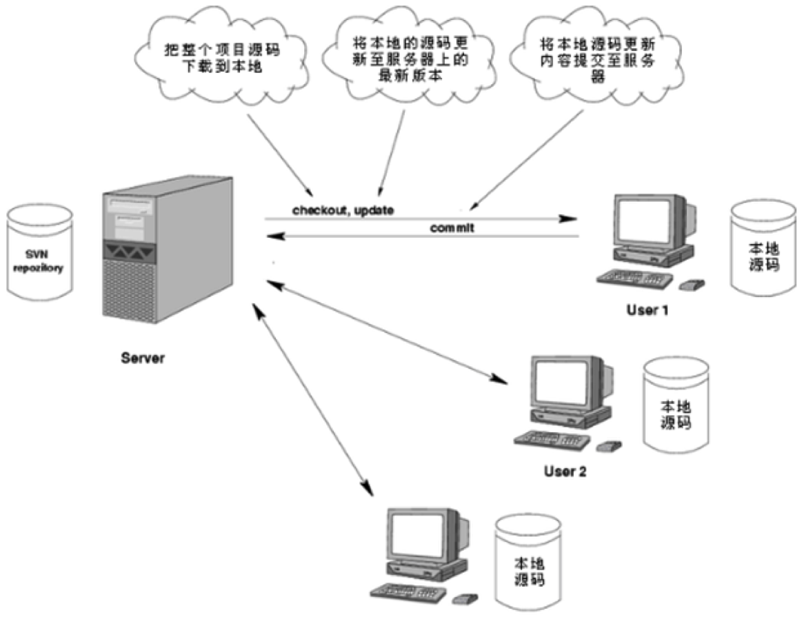

Svn基本使用
基本操作

使用环境包含客户端和服务器环境。服务器用于存储客户端上传的源代码。Windows上可以使用Visual SVN Server。在Mac上，客户端可以使用Cornerstone这个软件进行代码的上传和同步等。
SVN常用命令
- svn checkout: 下载服务器的代码到本地（简写 svn co）
- svn commit: 将改动的文件提交到服务器
- svn update: 更新服务器的代码到本地（简写 svn up）
- svn add: 向本地的版本控制库中添加新文件
- svn delete 、svn remove: 从本地的版本库中删除文件（简写 svn del、svn rm）
- svn move: 移动文件或者目录或文件改名
- svn mkdir: 创建纳入版本控制下的新目录
- svn revert: 撤销之前的一切修改
- svn merge: 将两个版本之间的差异合并到当前文件
- svn info: 查看文件的详细信息
- svn diff: 查看不同版本的区别
- svn log: 查看日志信息
- svn list: 列出版本库下的文件或目录列表
- svn status: 查看文件状态
- svn help: 获取帮助信息
- svn lock: 加锁
- svn unlock: 解锁
常见问题
不小心写错了很多东西，想撤销所有的操作（还没有修改提交到服务器）
svn revert
不小心删错了文件，想把文件恢复过来（还未把删除提交到服务器）
svn revert
不小心写错了很多东西，想撤销所有的操作（已经将修改提交到服务器）
svn update -r 版本号
不小心删错了文件，想把文件恢复过来（已经将修改提交到服务器）
svn update -r 版本号
注意 .svn这个目录记录着非常关键的信息，不要收工修改或删除这个目录和里面的文件。否则会导致本地的工作副本被破坏。无法再进行操作。